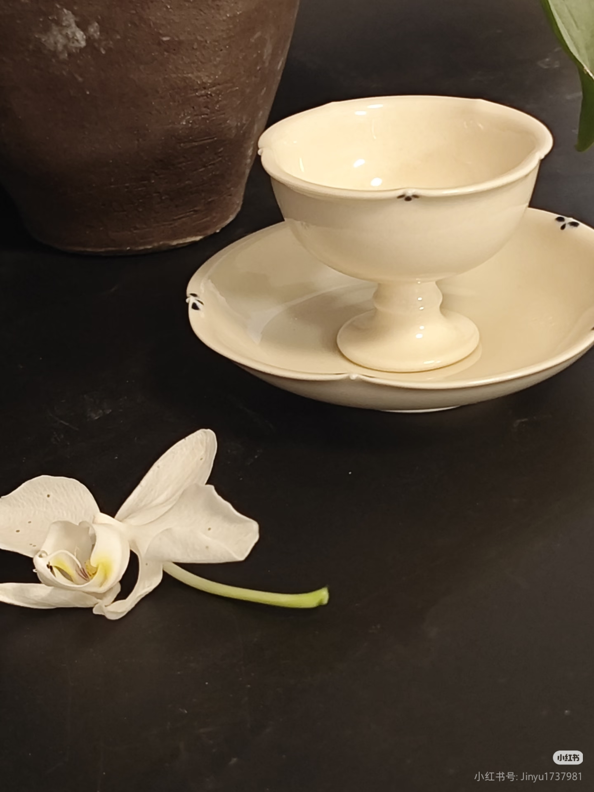
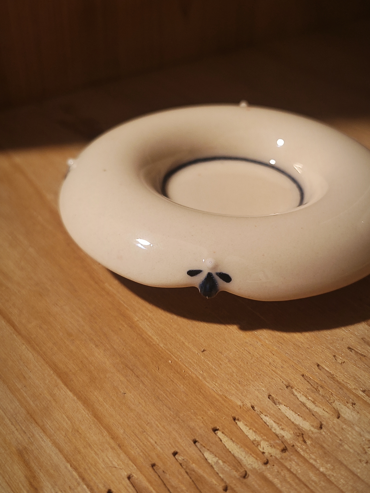
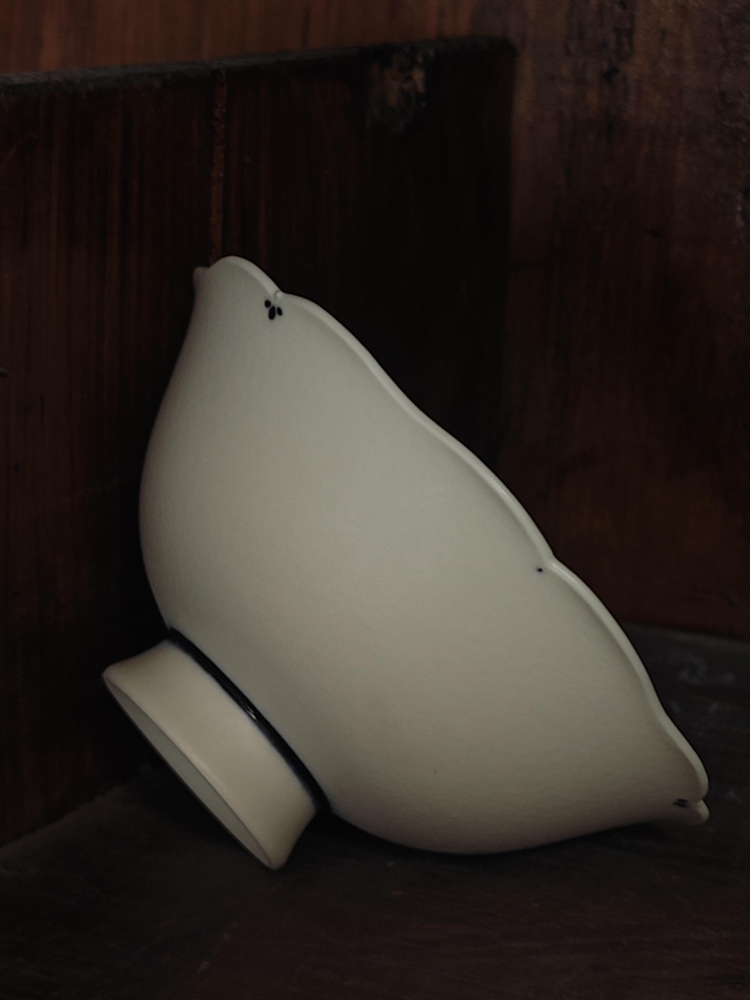
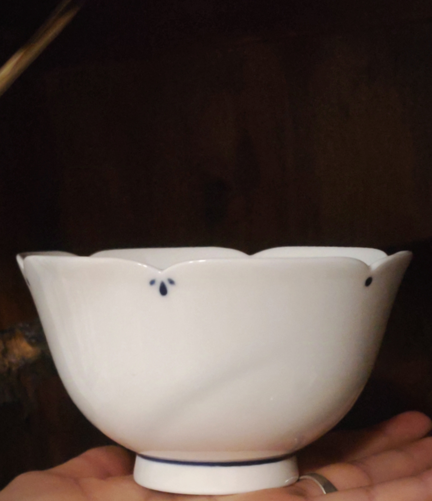
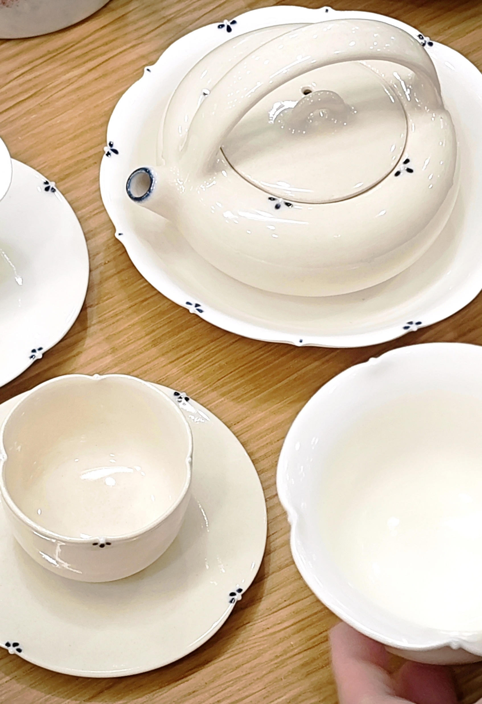
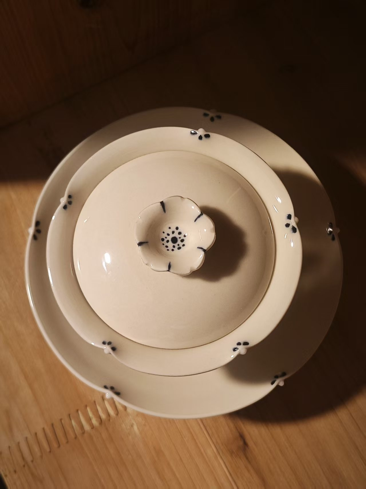
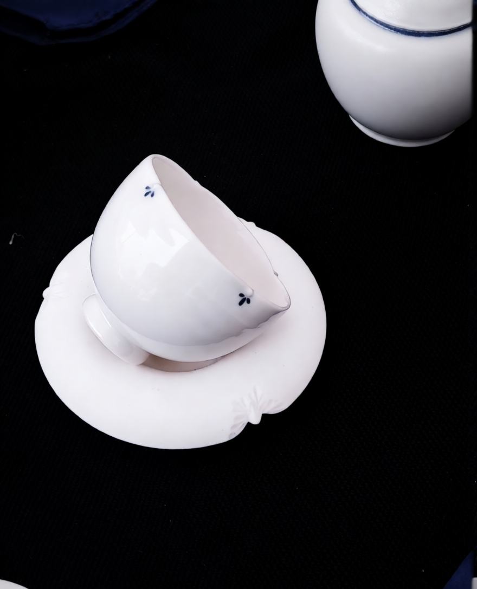
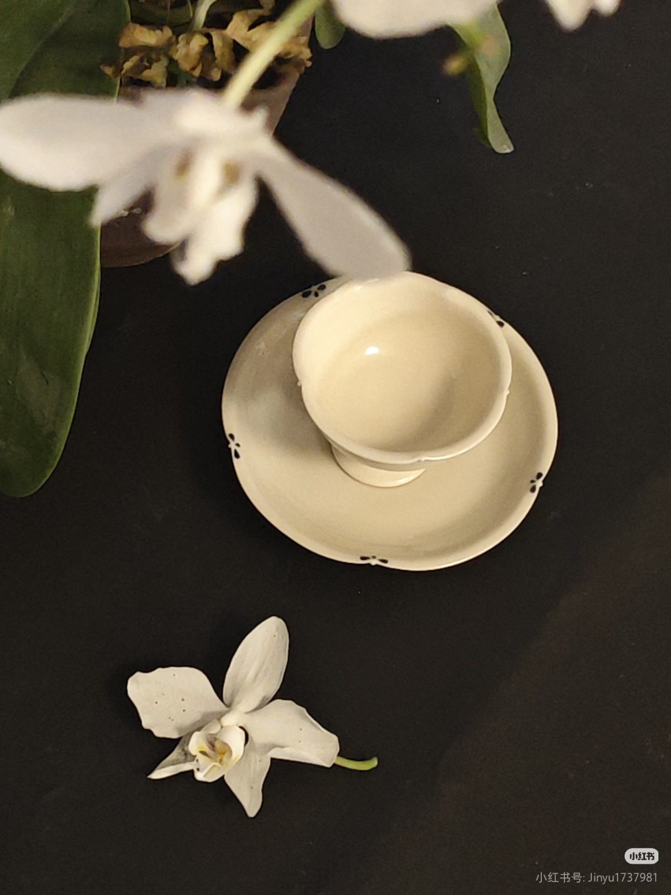
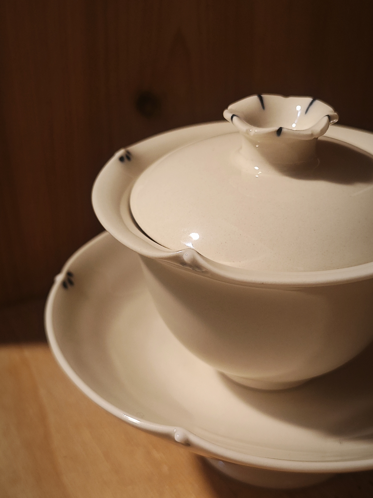
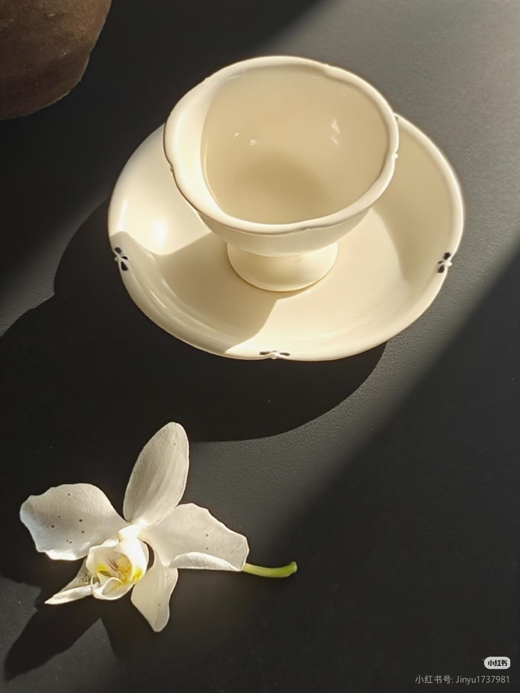

HAKUSHITSU
日常之器 / 手作白釉
Est. 2018 — Jingdezhen
On Imperfection
白室是一个缓慢的陶艺项目。
我们相信不完美是器物的呼吸。每一件器物都保留了手的痕迹——轻微的倾斜、自然的釉色变化、边缘的不规则起伏。这些都是时间与人的印记。
在景德镇的工作室里，我们使用最基础的方式制作：手拉坯、修型、施白釉、高温烧成。没有模具，没有量产。每一件器物都是独立的个体。
我们更偏爱安静之物——不急于被注意，而是在日常使用中缓慢显现。

The Process
在辘轳上手工拉制，每一件器物的厚薄与弧度均由双手感知决定。不做完全一致。
半干状态下修整器型。花瓣边缘为手工捏制，每一片的角度与弧度略有不同。
800°C 低温素烧，使坯体具备足够强度以承载釉料。
手工浸釉，釉层厚度由浸入时长与手势控制。自然流淌产生的细微差异，是器物独特的表情。
1280°C 高温还原焰烧成。48 小时自然冷却，不加速，不干预。



Collection
手工捏制花瓣边缘。每一件器物的瓣数、弧度、高低皆不相同。白釉在高温下微微流动，在边缘处自然积釉，形成温润的厚度变化。

Silent Petal Bowl · Five-Petal
手拉坯白釉瓷 / 2024
直径约 14cm / 高约 7cm
¥480 – 680

Silent Petal Bowl · Seven-Petal
手拉坯白釉瓷 / 2024
直径约 16cm / 高约 8cm
¥520 – 720
在白釉之上，手工点染钴蓝。蓝点的大小、疏密、位置均为随机，无两件相同。灵感来自景德镇传统青花，但克制成最少的表达。

Blue Dot Plate
手拉坯白釉瓷 · 钴蓝手工点染 / 2023
直径约 20cm
¥580 – 780

Blue Dot Shallow Bowl
手拉坯白釉瓷 · 钴蓝手工点染 / 2023
直径约 18cm / 高约 6cm
¥620 – 820

Blue Dot Tea Cup
手拉坯白釉瓷 · 钴蓝手工点染 / 2023
直径约 7cm / 高约 5cm
¥380 – 480
Journal & Exhibitions
2024
白の間
Gallery YAMA, Kyoto
个展 · 白釉器物与空间的对话
2023
日常の詩
介末 Art Space, Shanghai
白室三年作品回顾
2023
Hands and Earth
木墨 MUMO Gallery, Hangzhou
中日手作器物联展
2022
Quiet Objects
小器生活道具, Taipei
白室器物常设展
2021
White Vessels
Object Space, Tokyo
白室 × 木村硝子 联合展
2020
新器
景德镇陶瓷艺术博览会
首次工作室公开
小器生活道具
台北
介末
上海
木墨
杭州
Gallery YAMA
京都
Object Space
东京
三清洞
首尔
Shen Yu
沈予，1987 年生于福州。
2006 年进入景德镇陶瓷学院学习陶艺。2012 年赴京都，师从陶艺家山田義久，在京都的六年里，逐渐建立了对「不完美之美」的理解。
2018 年回到景德镇，成立白室 HAKUSHITSU。
目前往返于景德镇与福建沿海的一间小工作室。大部分时间独自工作，偶尔与茶人、料理人合作。
「我更在意器物在日常中的样子。不是被展示在聚光灯下的那一刻，而是清晨盛一碗粥、午后倒一杯茶的时候。」